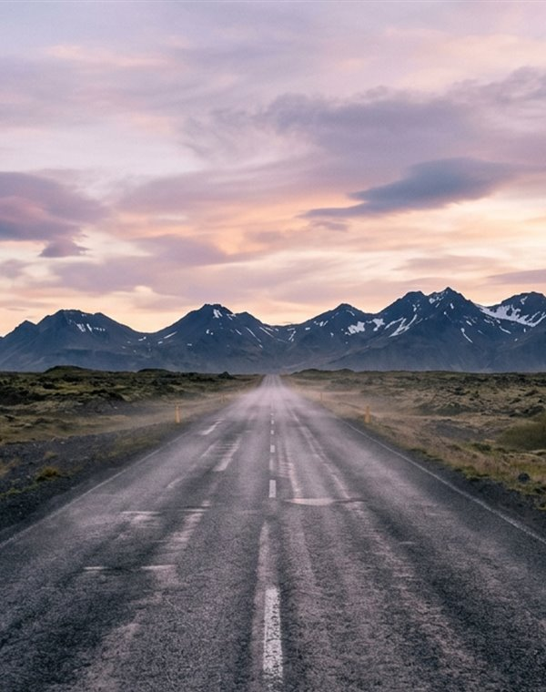
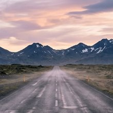

CALDERA
DRIFT
HIGHLANDS, IS
Every route is scouted in winter twilight and guided by certified polar mountaineers in eight-traveler cohorts with full satellite telemetry, heated expedition rigs, and custom cold-weather kits.
Basalt lava plateaus, steaming rhyolite valleys, and midnight twilight crossings along Route F208.
Sub-arctic coastal ridge traverse beneath solar-maximum crimson & emerald auroral arcs.
High-latitude Dempster permafrost crossing over mirror-ice lakes and sub-zero horizon flats.
Golden steppe approach into Fitz Roy and Torres del Paine granite spires and glacial moraines.
Receive full GPX route files, cold-weather layering manifests, and seat availability for the upcoming departure window.